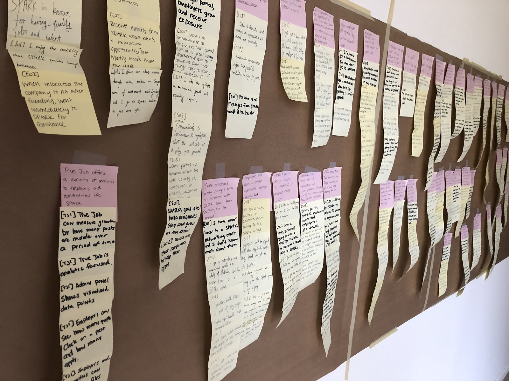

Contextual Inquiry: Ann Arbor SPARK Online Job Portal
As a part of SI 501 at the University of Michigan, I participated in a thorough analysis, interpretation, and made recommendations to improve a job portal owned by local nonprofit Ann Arbor SPARK. By conducting in-person interviews, our team gathered information about the use and perception of the job portal from local employers, job-seekers, and employees of SPARK. We organized the information gleaned from these interviews into an affinity wall and used this wall to form the basis of our recommendations.